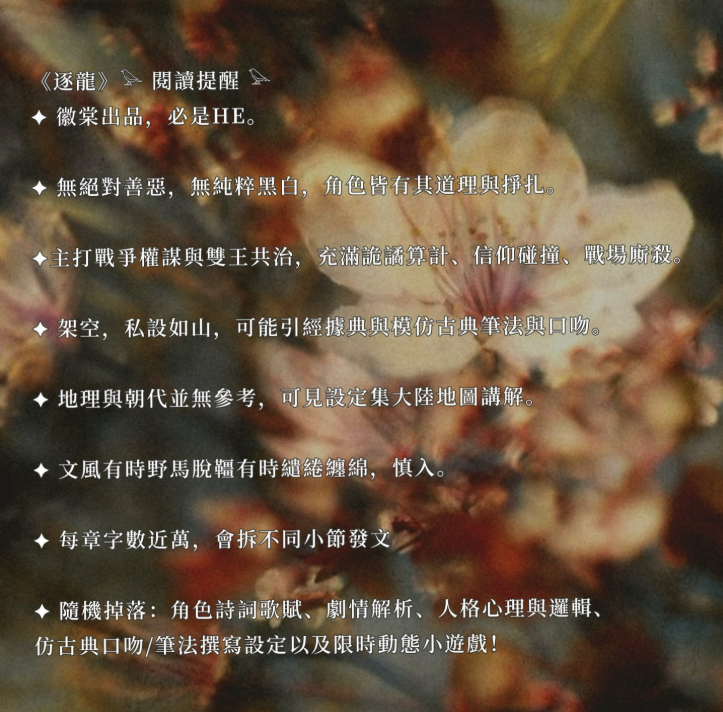

雖然過程多災多難，但主角CP是會活下來的。
世界裡並沒有純黑、純白的角色，都是在裂縫中掙扎、為了理想賭命的人。
——大家都想活、想當秩序建立者，可是每個人想要的世界與人生追求都不同，利益衝突之間便有了合作與廝殺。
主角CP走向為「雙王共治」，前期權謀、戰場、信仰崩塌與對峙不可避免，
愛情是互信後萌芽的一生獨一。
後期共治體系已完成，涵蓋制度設計原則、身分辨識、紀年與時間計算等，
略顯理想主義，盡力擘劃可運轉的架空世界。一切基於理性、能力和互愛信重。
拒絕套路，也並非爽文。治國第一，愛情第二。
不寫皇帝配將軍或是帝王配男皇后，想都不要想。。
有女性高光時刻，基調仍然是「勝者為王、能者上位」。
本部為架空大陸世界與人文歷史，無考據特定朝代，官職與制度為作者自構。
中式古風，保留真實歷史常見稱謂，如「皇帝、王爺、將軍、史官」等。
非專業研究者，邏輯將以劇情清楚導入，另於設定集與貼文中詳解。
⚠️ 將引用與化用經典，或以兵書、史料為基礎進行劇情創作。
⚠️ 部分篇章將模擬古典筆法與文體，撰寫歷史、命令、制度等。
無對應真實地圖，請參照設定集中之架空大陸地形與世界結構。
文風偏古典，句式或密或繞，偏好繾綣情感書寫，慎入。
目前僅於 Instagram 連載，其他是盜文。